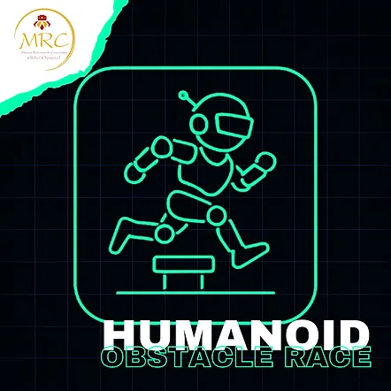
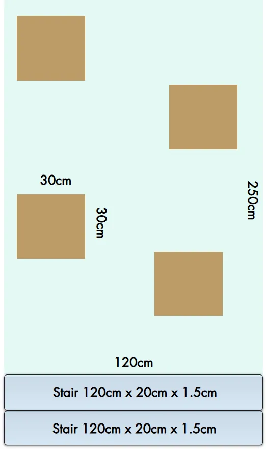

青少年組 / 青年組 (14至18歲 / 國中及高中)
成人組 (18歲以上 / 大學生及個人)
⚠️ 本項目僅設一個級別：
所有類型的機器人同場競技。
🚨 兩個年齡組別合併比賽。
⚠️ 第零條規則 – 零容忍原則與常識
在所有運動項目中，均適用第零條規則，其內容如下：
➤「如果您不確定某件事是否被允許，那麼它很可能是不被允許的。」
所有規則皆基於常識、運動精神以及所有參與者的安全。
任何蓄意曲解、違反規則本意，或試圖利用灰色地帶獲取不公平優勢的行為，將不被容忍，並可能導致隊伍被取消比賽資格。
1.1 比賽可以隊伍或個人名義參加。
1.2 每隊可由二 (2) 至三 (3) 名隊員組成。
1.3 每隊必須指定最多一 (1) 名機器人運動員技師。僅允許機器人運動員技師進入準備區或比賽區域。其餘隊員必須留在比賽場地內，但不得排隊等候。➤ 換言之，他們不能佔用額外位置。若隊伍未遵守此規則，將被取消資格。
1.4 允許隊伍在每次賽道嘗試前更換指定的技師，讓所有隊員都有機會積極參與該項目，但此非強制性。
1.5 所有隊員必須年滿 10 歲 (相當於國小四年級或以上)。
1.6 隊伍教練必須年滿 20 歲。
1.7 為確保比賽順利進行，教練每註冊 3 支隊伍參加比賽，就必須配備 1 名助理。
1.8 每隊僅允許使用一台機器人。
1.9 比賽期間不得更換機器人。
1.10 隊伍之間不得共用同一台機器人。
1.11 若隊伍的機器人遇到嚴重的技術問題，經主裁判許可後，僅允許更換微控制器或電子元件。
🤖 2. 機器人運動員要求
⚙️ 2.1. 一般機器人規格
1. 允許任何機器人設計，但不得違反第 2.2 節之限制。
2. 機器人必須能放入邊長 20 公分（200 公釐）的正方形內。機器人最大高度為 50 公分（500 公釐）。
3. 機器人在比賽開始時的總質量必須低於 3 公斤（3000 公克）。
4. 機器人必須是雙足行走的仿人機器人，且在行走時必須轉移重心以保持平衡。
5. 所有機器人必須是自主運作的。只要所有組件都包含在機器人體內，且該機制不與外部控制系統（人為、機器或其他）互動，則可使用任何控制機制。
6. 機器人必須在外部機殼的顯眼位置顯示由主辦單位提供的編號。用於識別機器人的編號 (ID) 將在檢查後由裁判給出。
🚫 2.2. 機器人限制
1. 行走時，一隻腳應離開地面，而另一隻腳平衡機器人。
2. 行走時，機器人用於平衡的那條腿的膝關節角度必須大於 90 度。在任何時候，若非如此，則該機器人將不被視為在行走。
3. 只要滿足以下所有條件，腿部可以有任何形狀和形式：
➤ 機器人腳部定義為機器人與競賽場地表面（地面）接觸的部分。
4. 腳部的最大長度（尺寸）必須小於機器人伸展腿長度的 50%。腿長定義為機器人腳部接觸地面點與腿部連接機器人上軀幹之軸心之間的距離。
5. 腳部最大長度必須小於 20 公分（200 公釐）。
6. 當機器人站立或行走時，左右腿周圍的矩形邊框不得重疊。
7. 機器人必須有 2 隻手臂。每隻伸展手臂的長度不得超過伸展腿的長度。
8. 機器人必須有一個頭部。
9. 不允許使用干擾裝置，例如旨在飽和對手紅外線感測器的紅外線 LED。
10. 不允許使用可能破壞或損壞比賽場地的組件。
11. 不允許使用可儲存液體、粉末、氣體或其他物質的裝置。
12. 不允許任何類型的可燃裝置。
13. 不允許使用黏性物質來增加附著力。
14. 機器人必須在比賽開始前保持靜止 5 秒鐘。5 秒後機器人方可移動。
15. 機器人可透過遙控器或機器人上的按鈕啟動。
🧪 2.3 機器人運動員的技術檢查
1. 初次技術檢查將於比賽當日，由主辦單位決定之地點與時間進行。
2. 技術檢查在機器人運動員可能參與的每個階段開始前進行。
3. 隊伍若未能按時將其機器人運動員送達技術檢查，將導致該隊伍自動被取消比賽資格。
4. 僅機器人運動員的教練負責將隊伍的機器人運動員送交技術檢查。
5. 技術檢查包括根據上述「機器人運動員」章節中的條件測試機器人運動員。若未達規格，將不被接受參賽，並自動取消其在該項目的資格。
6. 在技術檢查期間，機器人運動員的教練必須向檢查委員會展示程式。
📐 3. 賽道挑戰 - 設計
1. 賽道為矩形，寬度 = 120 公分，長度 = 250 公分
2. 使用 2 塊高度為 10 公分的表面件作為邊界。
3. 起點和終點線為黑色，寬度 1.5 公分。
4. 賽道上將有 4 個 30 公分 x 30 公分的方形障礙物，高度不同。
5. 在路線起點處將有一個樓梯，有 2 級台階，每級高 1.5 公分，深 20 公分。
賽道範例
在下一張圖片中您可以看到賽道的隨機範例。
正式賽道將於比賽當日公布。
障礙物位置為隨機。
您可以在任何循跡賽道上練習。
請遵循有關彎道和障礙物的說明來建造您自己的賽道。

📋 4. 比賽程序
🧗 4.1 挑戰 1：攀爬樓梯
🎯 4.1.1. 挑戰目標：
機器人運動員必須到達樓梯頂端，並使用雙腿一次一階地攀爬，進入挑戰區域。
🧮 4.1.2. 挑戰分數：
🕒 4.1.3. 嘗試次數：
機器人運動員的教練在嘗試前後將有充足的時間進行測試。每位機器人運動員有 3 次正式嘗試，其分數將被計算。
🤖 4.1.4. 自主控制：
一旦發出開始信號，機器人必須保持完全自主運作，否則將被取消資格。機器人在挑戰期間必須與任何網絡斷開連接，以避免外部干擾。
🔁 4.1.5. 重新嘗試：
1. 若機器人從樓梯上摔落或因各種原因（電池電量不足、馬達過熱、程式錯誤等）卡住，僅在第一次嘗試時獲得第二次完成挑戰的機會。在重新嘗試前，可能會給予最多 10 分鐘的時間來解決問題。機器人重新啟動時將位於第一階台階上。若有重新嘗試，將以最佳成績計入分數。
2. 若隊伍拒絕第二次機會，或機器人無法在給定時間內修正，則以第一次嘗試計分。
🏁 4.2 挑戰 2：障礙賽
🎯 1. 挑戰目標：
障礙賽的目標是讓雙足機器人運動員完成障礙賽道並獲得積分。
🛤️ 2. 挑戰賽道：
⛔ 4. 中斷：
若機器人運動員因任何原因摔倒，有權重新開始一次。機器人必須從起始位置重新開始。
🧮 4.3. 障礙賽挑戰評分：
🏆 1. 機器人運動員每通過一個障礙物，將獲得 50 分。
必須明顯看出障礙物已被通過。因任何原因在障礙物中間停止的機器人運動員，將不會獲得該障礙物的分數。
⚖️ 2. 異議：
1. 不會對評審團的決定提出異議。
2. 若對規則有任何問題、任何申訴或觀察到任何偏離規則的情況，投訴必須由隊伍負責人向主裁判提出。
🧩 3. 規則的靈活性：
1. 只要尊重規則的概念和基本原則，這些規則將足夠靈活，以適應參賽者數量和比賽內容的變化。
2. 主辦單位可對規則進行修訂或廢除，只要在活動前公布，並在整個活動期間保持一致。
🛡️ 4. 責任：
1. 參賽隊伍始終對其自身機器人的安全負責，並對隊員或機器人造成的任何事故承擔責任。
2. 主辦單位絕不對參賽隊伍及其機器人造成的任何事件/事故負責。
🏆 獲勝者
3 名獲勝者是得分最高的隊伍。
最佳分數用於決定以下名次：
🥇 第一名 🥈 第二名 🥉 第三名
最終排名是將每位機器人運動員在兩個挑戰中的分數相加。總分最高的機器人運動員贏得比賽。若出現平手，則以上一次嘗試的分數等依序計算。